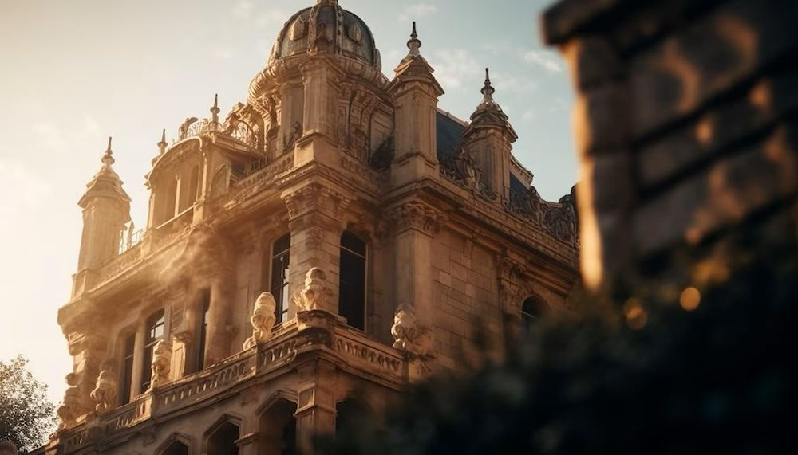

Explorați Madrid - Capitala vibrantă a Spaniei
Madrid este o metropolă plină de energie din Spania, oferind o varietate de atracții și experiențe pentru vizitatori:
-

Muzee de prestigiu - Artă și cultură
Madrid găzduiește muzee celebre precum Muzeul Prado, Muzeul Reina Sofia și Muzeul Thyssen-Bornemisza.
-

Palatul Regal - Eleganță regală
Palatul Regal din Madrid oferă o privire în istoria și opulența monarhiei spaniole.
-

Parcuri și grădini - Relaxare în natură
Parcul Retiro și alte spații verzi oferă oaza de liniște și relaxare în mijlocul orașului.
-

Piețe animante - Pulsul orașului
Piețele cum ar fi Puerta del Sol și Plaza Mayor sunt locuri unde se simte vibrația orașului.
-

Bucătăria spaniolă - Delicii culinare
Descoperiți tapas-ul, paella și alte delicii ale gastronomiei spaniole în restaurante și taverne.
Concluzii
Madridul este un centru cultural și urban plin de istorie, artă și experiențe memorabile pentru orice vizitator.